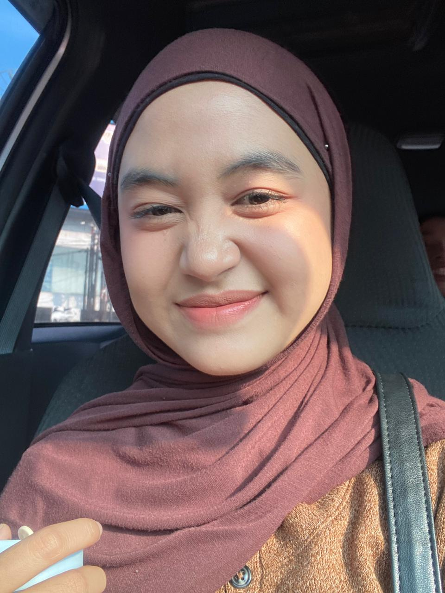

Foto Profil

Tentang Saya
Halo! Perkenalkan nama saya Aulia Ramadhani Siregar. Saya lahir di
Tarutung pada tanggal 17 September 2006. Saat ini saya adalah
mahasiswa jurusan Sistem Informasi di Universitas Muhammadiyah
Sumatera Utara.
Saya memiliki ketertarikan yang besar dalam bidang teknologi,
terutama web development, cyber security dan artificial intelligence.
Saya selalu bersemangat untuk belajar hal-hal baru yang bisa mengembangkan
keterampilan saya.
Data Pribadi
- Nama Lengkap: Aulia Ramadhani Siregar
- Tempat, Tanggal Lahir: Tarutung, 17 September 2006
- Alamat: Jl. Ar Hakim No.6a
- Status: Belum Menikah
- Agama: Islam
- Kewarganegaraan: Indonesia
Hobi & Minat
- Programming dan design
- Melukis
- Baking
- mendengarkan musik
- belajar hal baru yang bermanfaat
Riwayat Pendidikan
-
SD negeri 060816 (2012 - 2018)
Lulus dengan nilai rata-rata 8.5
-
MTSN Tapanuli Utara (2018 - 2021)
Lulus dengan nilai rata-rata 9.0
-
Man Tapanuli Utara (2021 - 2024)
Jurusan IPA, lulus dengan nilai rata-rata 9.7
-
Universitas Muhammadiyah Sumatera Utara (2024 - Sekarang)
Jurusan Sistem Informasi,
Keterampilan
- Programming Languages: HTML, CSS, JavaScript, Python, Java
- Database: MySQL, MongoDB, PostgreSQL
- Tools: Git, VS Code, Docker, Linux
- Languages: Indonesia (Native), English (Advanced)
Kontak Saya
Social Media
Instagram